<meta charset="utf-8">
<meta name="viewport" content="width=device-width, initial-scale=1">
<title>GeotechStaffEngineer — Module Visualization Gallery</title>
<style>
:root{
  --bg:#f4f5f7; --card:#ffffff; --ink:#1f2937; --muted:#5b6472;
  --line:#e2e5ea; --accent:#1d4ed8; --badge:#eef2ff; --badge-ink:#3730a3;
  --num-bg:#f8fafc; --shadow:0 1px 3px rgba(16,24,40,.08),0 1px 2px rgba(16,24,40,.06);
}
@media (prefers-color-scheme:dark){
  :root{--bg:#0e1116; --card:#161b22; --ink:#e6edf3; --muted:#9aa4b2;
    --line:#262d36; --accent:#7aa2ff; --badge:#1c2438; --badge-ink:#a9bcff;
    --num-bg:#0f141b; --shadow:0 1px 3px rgba(0,0,0,.5);}
}
:root[data-theme="dark"]{--bg:#0e1116; --card:#161b22; --ink:#e6edf3; --muted:#9aa4b2;
  --line:#262d36; --accent:#7aa2ff; --badge:#1c2438; --badge-ink:#a9bcff;
  --num-bg:#0f141b; --shadow:0 1px 3px rgba(0,0,0,.5);}
:root[data-theme="light"]{--bg:#f4f5f7; --card:#ffffff; --ink:#1f2937; --muted:#5b6472;
  --line:#e2e5ea; --accent:#1d4ed8; --badge:#eef2ff; --badge-ink:#3730a3;
  --num-bg:#f8fafc; --shadow:0 1px 3px rgba(16,24,40,.08),0 1px 2px rgba(16,24,40,.06);}
*{box-sizing:border-box}
body{margin:0;background:var(--bg);color:var(--ink);
  font-family:-apple-system,BlinkMacSystemFont,"Segoe UI",Roboto,Helvetica,Arial,sans-serif;
  line-height:1.6;font-size:16px;}
.wrap{max-width:1040px;margin:0 auto;padding:0 20px 80px;}
header.hero{padding:56px 20px 30px;max-width:1040px;margin:0 auto;}
.hero h1{font-size:2.15rem;line-height:1.15;margin:0 0 6px;letter-spacing:-.02em;}
.hero .sub{color:var(--muted);font-size:1.08rem;max-width:70ch;}
.hero .framing{margin-top:20px;padding:18px 20px;background:var(--card);
  border:1px solid var(--line);border-left:3px solid var(--accent);
  border-radius:10px;box-shadow:var(--shadow);max-width:78ch;font-size:.97rem;}
nav.toc{display:flex;flex-wrap:wrap;gap:8px;margin:26px 0 8px;}
nav.toc a{font-size:.82rem;text-decoration:none;color:var(--badge-ink);
  background:var(--badge);border:1px solid var(--line);border-radius:999px;
  padding:4px 11px;transition:transform .1s;}
nav.toc a:hover{transform:translateY(-1px);}
section.ex{background:var(--card);border:1px solid var(--line);border-radius:14px;
  padding:26px 26px 22px;margin:22px 0;box-shadow:var(--shadow);scroll-margin-top:16px;}
.ex .num{font-variant-numeric:tabular-nums;color:var(--accent);font-weight:700;
  font-size:.82rem;letter-spacing:.08em;text-transform:uppercase;}
.ex h2{font-size:1.42rem;margin:4px 0 4px;letter-spacing:-.01em;line-height:1.2;}
.ex .module{color:var(--muted);font-size:.82rem;font-family:ui-monospace,SFMono-Regular,Menlo,monospace;}
.badge{display:inline-block;margin:10px 0 4px;font-size:.78rem;color:var(--badge-ink);
  background:var(--badge);border:1px solid var(--line);border-radius:8px;padding:5px 10px;}
.badge b{font-weight:600;}
figure{margin:18px 0 6px;}
figure img{width:100%;height:auto;border:1px solid var(--line);border-radius:10px;background:#fff;}
figcaption{color:var(--muted);font-size:.86rem;margin-top:7px;}
.what{margin:14px 0 4px;font-size:1.0rem;}
.numbers{display:grid;grid-template-columns:1fr;gap:0;margin:16px 0 2px;
  background:var(--num-bg);border:1px solid var(--line);border-radius:10px;overflow:hidden;}
.numbers .row{display:grid;grid-template-columns:minmax(0,46%) 1fr;gap:12px;
  padding:9px 14px;border-top:1px solid var(--line);font-size:.9rem;}
.numbers .row:first-child{border-top:none;}
.numbers .k{color:var(--muted);}
.numbers .v{font-family:ui-monospace,SFMono-Regular,Menlo,monospace;font-weight:600;
  font-variant-numeric:tabular-nums;}
.interactive-link{display:inline-block;margin-top:8px;font-size:.84rem;color:var(--accent);}
footer{max-width:1040px;margin:40px auto 0;padding:22px 20px;color:var(--muted);
  font-size:.84rem;border-top:1px solid var(--line);}
.themebtn{position:fixed;top:14px;right:14px;background:var(--card);color:var(--ink);
  border:1px solid var(--line);border-radius:8px;padding:6px 10px;cursor:pointer;
  font-size:.8rem;box-shadow:var(--shadow);z-index:10;}
</style>
<button class="themebtn" id="themebtn">Toggle theme</button>
<header class="hero">
  <h1>What the modules do</h1>
  <div class="sub">A visual tour of the GeotechStaffEngineer analysis toolkit — every figure is a
    real run of the shipped code on a validated benchmark.</div>
  <div class="framing">Geotechnical engineering is the practice of building on and in the ground, where the material is the earth itself: layered, variable, and sampled at only a handful of points. Because the ground is only partly known, a single number is never the answer — the real answer is a range. Every exhibit below is a live run of one of the toolkit's analysis modules on a published benchmark problem, so the pictures show what the code actually does and the numbers are what it actually computed.</div>
  <nav class="toc"><a href="#ex1">1. Slope stability</a>
<a href="#ex2">2. Inside one slip surface</a>
<a href="#ex3">3. Rapid drawdown</a>
<a href="#ex4">4. Newmark sliding block</a>
<a href="#ex5">5. Laterally loaded piles</a>
<a href="#ex6">6. Finite-element slope stability</a>
<a href="#ex7">7. Consolidation</a>
<a href="#ex8">8. Reliability</a>
<a href="#ex9">9. MSE wall LRFD external stability</a>
<a href="#ex10">10. Bearing capacity and settlement</a>
<a href="#ex11">11. Pile driving</a>
<a href="#ex12">12. From a PDF drawing to machine-readable geometry</a></nav>
</header>
<main class="wrap">

<section class="ex" id="ex1">
  <div class="num">Exhibit 01</div>
  <h2>Slope stability — searching thousands of surfaces for the weakest one</h2>
  <div class="module">module: slope_stability</div>
  <div class="badge"><b>Validation basis:</b> Fredlund &amp; Krahn (1977) homogeneous slope (Slide2 #21) — Bishop FOS 2.080</div>
  <figure>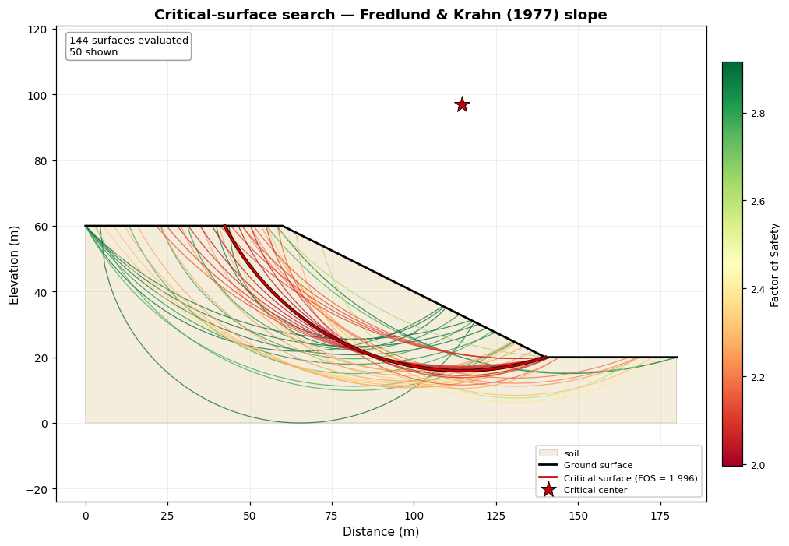<figcaption>Every trial circle scored and colored by its factor of safety (red = low, green = high); the critical surface is the dark red arc.</figcaption></figure><a class="interactive-link" href="figures/ex01_search_interactive.html">Open interactive version &rarr;</a>
  <p class="what">There is no single &#x27;the&#x27; failure surface — the analysis has to try a great many and report the weakest. This map is the whole circular search at once: each thin arc is a candidate slip circle, colored by the factor of safety it produced, so the eye is drawn straight to the red band of near-critical surfaces and the dark critical arc within it. The computed minimum reproduces the published Fredlund &amp; Krahn benchmark (Bishop 2.08). The second search uses free-form (noncircular) surfaces, and the panel quotes the module&#x27;s rejection diagnostics — of 400 trial geometries, the ones that self-intersect, fail to converge, or come back jagged are discarded before scoring, which is the robustness fix that keeps a stray degenerate surface from reporting a false low FOS.</p>
  <div class="numbers"><div class="row"><div class="k">Critical FOS (grid search)</div><div class="v">1.996 (published Bishop 2.080)</div></div>
<div class="row"><div class="k">Critical circle</div><div class="v">center (115, 97), R = 81</div></div>
<div class="row"><div class="k">Circular surfaces evaluated</div><div class="v">144</div></div>
<div class="row"><div class="k">Noncircular search</div><div class="v">400 evaluated, 256 kept, 144 rejected</div></div>
<div class="row"><div class="k">Rejections (geom / non-converged / jagged)</div><div class="v">14 / 130 / 0</div></div></div>
</section>

<section class="ex" id="ex2">
  <div class="num">Exhibit 02</div>
  <h2>Inside one slip surface — slice forces, thrust line, and method spread</h2>
  <div class="module">module: slope_stability</div>
  <div class="badge"><b>Validation basis:</b> Fredlund &amp; Krahn (1977) circle — rigorous Spencer/GLE thrust line and method table</div>
  <figure>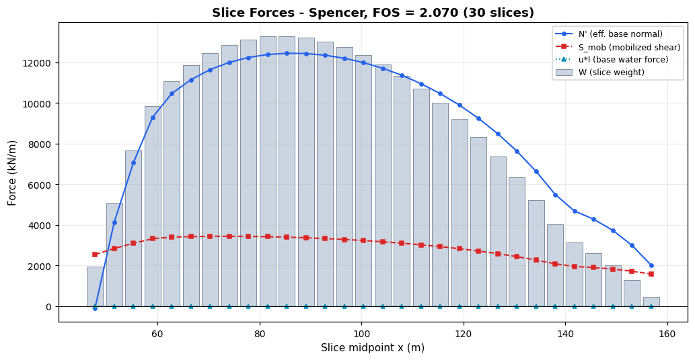<figcaption>Per-slice statics: base normal N&#x27;, mobilized shear, and slice weight across the sliding mass.</figcaption></figure><figure>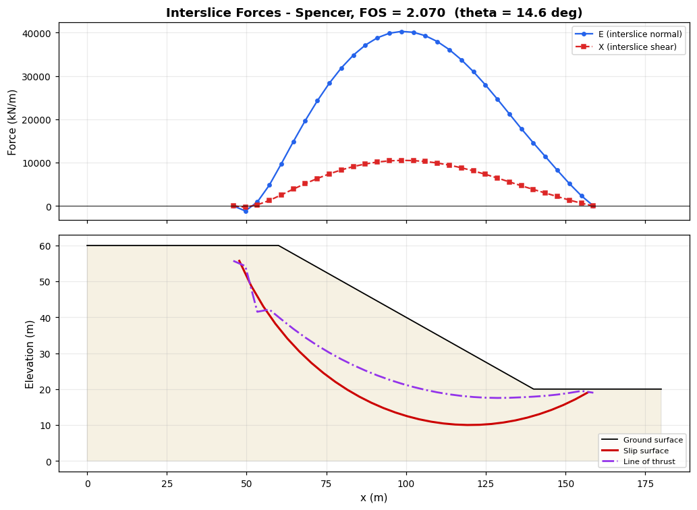<figcaption>Interslice normal (E) and shear (X) distributions, with the resulting line of thrust drawn on the section (Spencer, theta = 14.6 deg).</figcaption></figure><figure>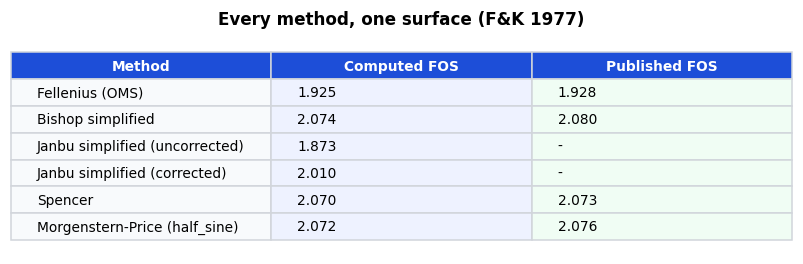<figcaption>The same circle solved by every limit-equilibrium method — the classic Fredlund &amp; Krahn comparison, reproduced.</figcaption></figure>
  <p class="what">Limit equilibrium works by cutting the sliding mass into vertical slices and balancing forces on each. The first figure opens up one critical circle: the base normal force, the shear the soil must mobilize, and each slice&#x27;s weight. The second shows what separates a rigorous method from a simple one — the interslice forces between slices and the resulting line of thrust, which Spencer&#x27;s method solves for explicitly (here inclined about 15 degrees, matching the published value). The table is the punchline of the 1977 Fredlund &amp; Krahn paper: the simple Ordinary method reads ~1.93 while the rigorous methods cluster near 2.07, so the choice of method is itself an engineering decision, and the toolkit reproduces the whole published spread.</p>
  <div class="numbers"><div class="row"><div class="k">Spencer FOS</div><div class="v">2.070 (published 2.073)</div></div>
<div class="row"><div class="k">Interslice inclination theta</div><div class="v">14.6 deg (F&amp;K report ~14.8 deg)</div></div>
<div class="row"><div class="k">Fellenius / Bishop</div><div class="v">1.925 / 2.074</div></div>
<div class="row"><div class="k">Spread across methods</div><div class="v">1.873 to 2.074</div></div></div>
</section>

<section class="ex" id="ex3">
  <div class="num">Exhibit 03</div>
  <h2>Rapid drawdown — the same dam, walked through three strength stages</h2>
  <div class="module">module: slope_stability (rapid_drawdown)</div>
  <div class="badge"><b>Validation basis:</b> Slide2 #95/#96 (USACE EM 1110-2-1902 App. G) — Corps 2-stage 1.347, DWW 3-stage 1.443</div>
  <figure>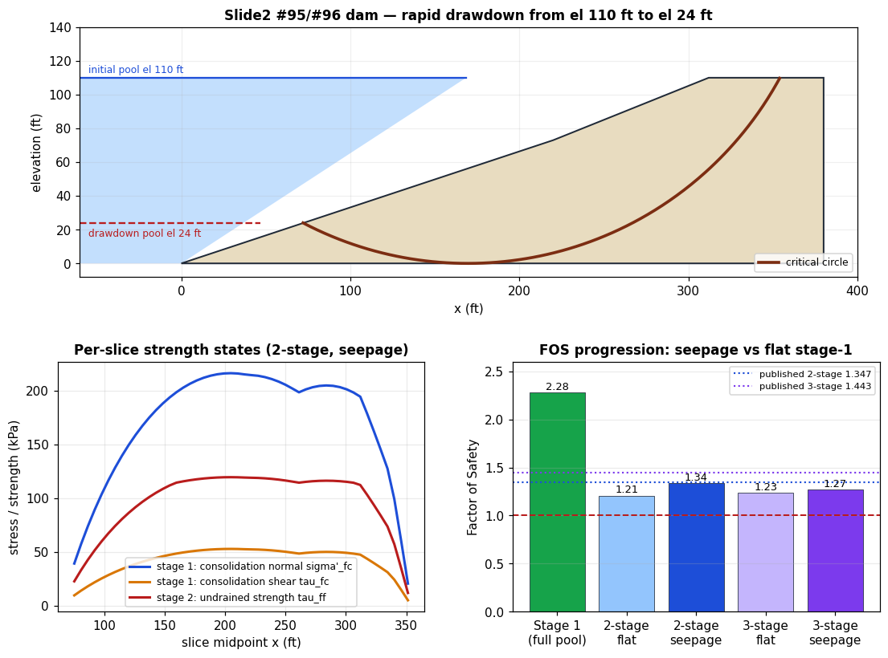<figcaption>Top: the embankment with full and drawn-down reservoir and the critical circle. Bottom-left: how each slice&#x27;s strength is set stage by stage. Bottom-right: the resulting factors of safety.</figcaption></figure>
  <p class="what">When a reservoir is drawn down quickly, the low-permeability fill cannot drain in step with the falling water, so it is left holding pore pressures from the old, higher pool while losing the water load that used to buttress the slope — a classic failure trigger. The analysis rebuilds each slice&#x27;s strength in stages: stage 1 fixes the consolidation stresses under full pool (bottom-left, blue and amber), stage 2 converts those into the undrained strength actually available right after drawdown (red), and the three-stage method adds a drained check that governs where it is lower. The bottom-right bars show why the seepage assumption matters: modeling the pre-drawdown phreatic surface as declining through the dam (steady seepage) lifts the factor of safety to 1.34, matching the published USACE benchmark of 1.35, whereas the conservative flat-pool bound sits lower. Stage 1 alone is comfortably stable near 2.3 — the danger is entirely in the drawn-down state.</p>
  <div class="numbers"><div class="row"><div class="k">Stage-1 FOS (full pool, stable)</div><div class="v">2.28</div></div>
<div class="row"><div class="k">Corps 2-stage (flat / seepage)</div><div class="v">1.21 / 1.34 (published 1.347)</div></div>
<div class="row"><div class="k">Duncan 3-stage (flat / seepage)</div><div class="v">1.23 / 1.27 (published 1.443)</div></div>
<div class="row"><div class="k">Undrained slices</div><div class="v">50 of 50</div></div></div>
</section>

<section class="ex" id="ex4">
  <div class="num">Exhibit 04</div>
  <h2>Newmark sliding block — how far a slope slips in a shake</h2>
  <div class="module">module: slope_stability (newmark)</div>
  <div class="badge"><b>Validation basis:</b> Slide2 #104 / Jibson (2007) — integrator exact on the rectangular-pulse closed form; ky = 0.15 g is representative (the published #104 critical acceleration is 0.14 g)</div>
  <figure>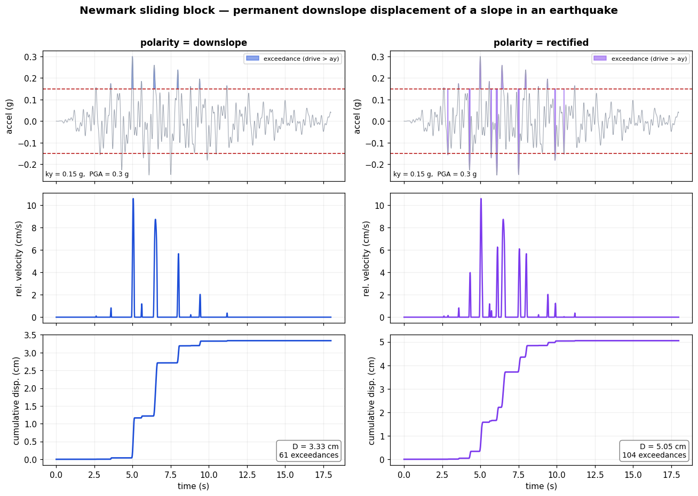<figcaption>The same record and yield acceleration integrated two ways: the standard one-directional Newmark block (left) and the conservative rectified block that both polarities drive (right).</figcaption></figure>
  <p class="what">A pseudo-static factor of safety tells you whether a slope yields in an earthquake, but not how much it moves — and a slope that slips a couple of centimetres is fine while one that slips a metre is a failure. Newmark&#x27;s method answers the &#x27;how much&#x27; by treating the sliding mass as a block that accumulates displacement every time the ground acceleration exceeds the slope&#x27;s yield acceleration (the red lines and shaded pulses in the top row). Integrating those pulses once gives the block&#x27;s velocity (middle) and again gives permanent displacement (bottom), which only ratchets downslope. The two columns show the module&#x27;s polarity option: the standard method counts only shakes in the downslope direction, while the &#x27;rectified&#x27; option lets both directions drive the block for a conservative, orientation-independent estimate — here about 1.5 times the displacement, approaching twice for a perfectly symmetric record. The integrator is exact against Newmark&#x27;s rectangular-pulse closed form, and the Jibson (2007) regression gives an independent sanity check on the magnitude.</p>
  <div class="numbers"><div class="row"><div class="k">Yield acceleration ky</div><div class="v">0.15 g</div></div>
<div class="row"><div class="k">Peak ground acceleration</div><div class="v">0.3 g</div></div>
<div class="row"><div class="k">Displacement (downslope)</div><div class="v">3.33 cm (61 exceedances)</div></div>
<div class="row"><div class="k">Displacement (rectified)</div><div class="v">5.05 cm (104 exceedances)</div></div>
<div class="row"><div class="k">Jibson (2007) regression</div><div class="v">0.88 cm (median, +/- 0.51 log10)</div></div></div>
</section>

<section class="ex" id="ex5">
  <div class="num">Exhibit 05</div>
  <h2>Laterally loaded piles — soil springs and the pile that bends against them</h2>
  <div class="module">module: lateral_pile</div>
  <div class="badge"><b>Validation basis:</b> FHWA Micropile Manual (NHI-05-039) Sample Problem 2 (LPILE 4) — Mmax -37.3 kN-m</div>
  <figure>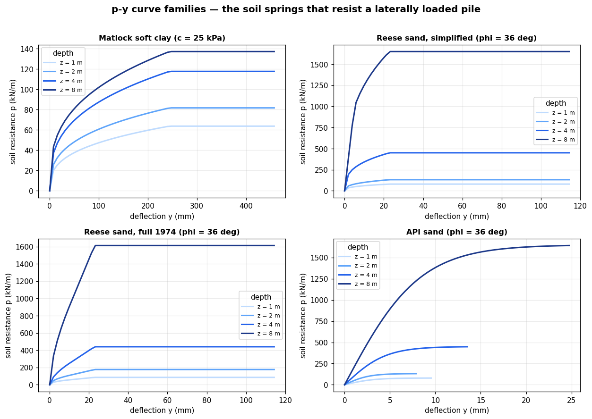<figcaption>The p-y springs: soil resistance vs pile deflection for the standard clay and sand models, each stiffening with depth. Note the full Reese 1974 curve is softer in the working range than the simplified one.</figcaption></figure><figure>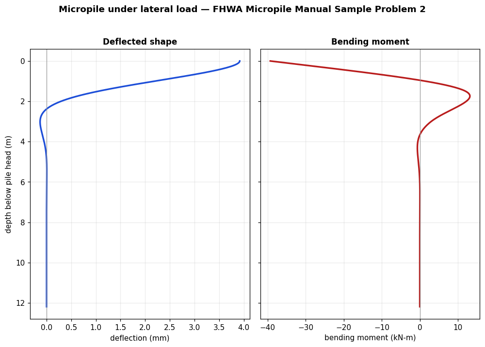<figcaption>A real finite-difference solve: the micropile&#x27;s deflected shape and bending-moment diagram under 44 kN of shear plus axial load, fixed head.</figcaption></figure>
  <p class="what">A pile pushed sideways is a beam on nonlinear springs, and the springs are the p-y curves in the first figure: at each depth the soil pushes back harder as the pile deflects, up to an ultimate resistance, and it does so more stiffly the deeper you go. The toolkit ships the standard families an engineer chooses among — Matlock&#x27;s soft clay, Reese sand in both a simplified and the full 1974 four-segment form, and the API sand curve — and the panel shows how differently they mobilize resistance. The second figure feeds those springs into a finite-difference beam-column solver and solves a published LPILE benchmark: the micropile&#x27;s deflected shape and the bending moment it must carry, with the maximum moment at the fixed head reproducing the published value within a few percent. The solver captures the axial load&#x27;s P-delta effect, and the small deflection difference from LPILE is a documented section-stiffness (composite EI) convention, not a p-y error.</p>
  <div class="numbers"><div class="row"><div class="k">Head deflection</div><div class="v">3.92 mm (LPILE 3.3 mm; casing-only EI, composite EI closes the gap)</div></div>
<div class="row"><div class="k">Maximum moment</div><div class="v">-39.3 kN-m (published LPILE -37.3, within 10%)</div></div>
<div class="row"><div class="k">Depth of max moment</div><div class="v">0.00 m (at the fixed head)</div></div>
<div class="row"><div class="k">p-y models shown</div><div class="v">Matlock clay, Reese sand (simplified + full 1974), API sand</div></div></div>
</section>

<section class="ex" id="ex6">
  <div class="num">Exhibit 06</div>
  <h2>Finite-element slope stability — no assumed surface, the mesh finds it</h2>
  <div class="module">module: fem2d (strength reduction)</div>
  <div class="badge"><b>Validation basis:</b> Griffiths &amp; Lane (1999) SRM method (Example 1 FOS 1.4); B6 cross-check vs Bishop LE</div>
  <figure>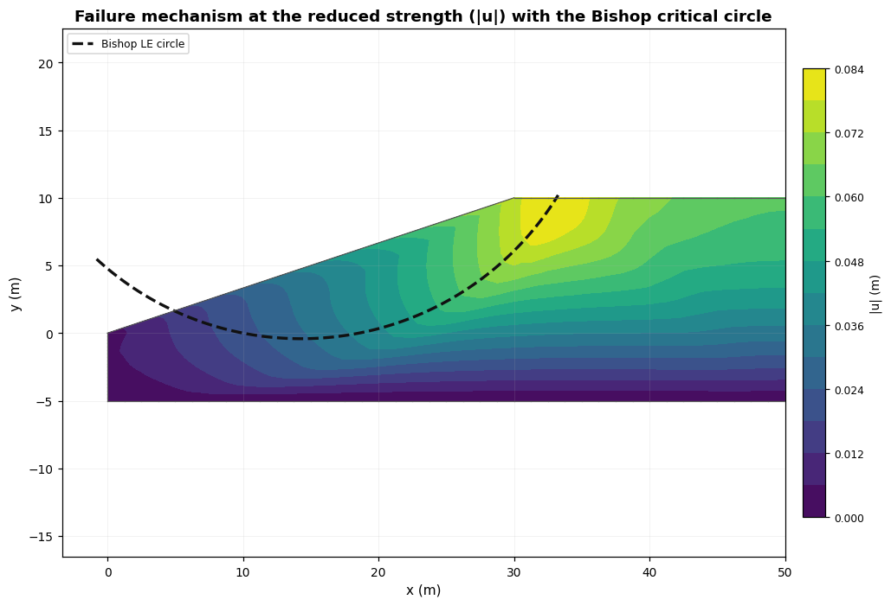<figcaption>The displacement field when the soil strength has been reduced to failure — the red band is the slip mechanism the finite-element mesh found on its own, and it tracks the dashed Bishop critical circle.</figcaption></figure><a class="interactive-link" href="figures/ex06_srm_interactive.html">Open interactive version &rarr;</a><figure>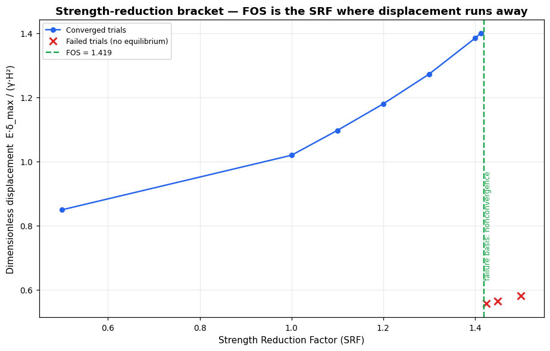<figcaption>How the factor of safety is found: strength is divided by a trial factor until the slope stops converging; that factor is the FOS.</figcaption></figure>
  <p class="what">Limit equilibrium assumes the shape of the failure surface; the finite-element strength-reduction method does not — it models the whole slope as a deforming continuum and progressively divides the soil&#x27;s strength by a trial factor until the slope can no longer find equilibrium. The factor at which displacements run away is the factor of safety. The first figure is the payoff: with strength reduced to failure, the displacement concentrates into a curved band that the mesh discovered for itself, and it falls almost exactly on the Bishop critical circle drawn over it — two completely different methods agreeing on where the slope fails. The second figure shows the bracketing search that pins the factor of safety. The finite-element value sits a little above the limit-equilibrium one at this mesh density and refines toward it as the mesh is made finer, exactly as Griffiths &amp; Lane document.</p>
  <div class="numbers"><div class="row"><div class="k">SRM factor of safety</div><div class="v">1.419</div></div>
<div class="row"><div class="k">Bishop LE (same slope)</div><div class="v">1.173</div></div>
<div class="row"><div class="k">SRM vs LE</div><div class="v">SRM +21% (refines toward LE with a finer mesh)</div></div>
<div class="row"><div class="k">Elements / basis</div><div class="v">1623 T6 elements, failure by nonconvergence</div></div></div>
</section>

<section class="ex" id="ex7">
  <div class="num">Exhibit 07</div>
  <h2>Consolidation — watching pore pressure bleed out of a loaded clay</h2>
  <div class="module">module: fem2d (monolithic consolidation)</div>
  <div class="badge"><b>Validation basis:</b> Itasca FLAC 1-D consolidation verification (V-023) — drained settlement 2.61 mm, isochrones match the Terzaghi series</div>
  <figure>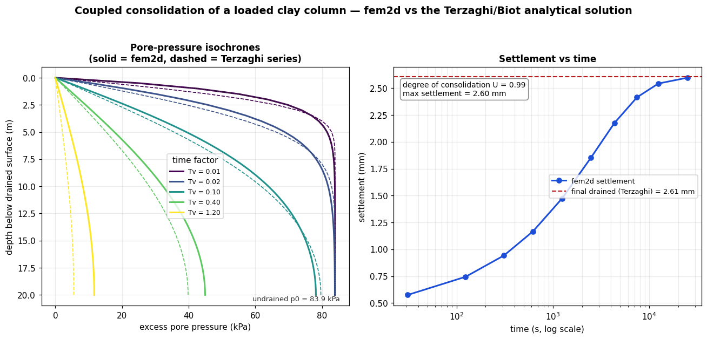<figcaption>Left: the excess pore pressure at each depth as time passes (finite element solid, textbook Terzaghi dashed). Right: the surface settling as that pressure dissipates.</figcaption></figure>
  <p class="what">Load a saturated clay and the water carries the load first: the pore pressure jumps, then slowly bleeds out through the drained surface while the soil skeleton takes over and the ground settles. This is the coupled problem Terzaghi solved by hand and that the monolithic (Taylor-Hood u-p Biot) finite-element solver reproduces here. The left figure shows the excess pore pressure at every depth at a sequence of times: it starts nearly uniform at the undrained value right after loading, then decays from the drained top downward, and the finite-element curves (solid) sit on the classical Terzaghi series (dashed) at every stage. The right figure is the settlement those pressures produce, marching from zero to the exact analytical final value of 2.6 mm as the clay fully consolidates. This is the same physics behind settlement-versus-time predictions under embankments and foundations.</p>
  <div class="numbers"><div class="row"><div class="k">Undrained pore pressure p0</div><div class="v">83.9 kPa (Biot analytic)</div></div>
<div class="row"><div class="k">Final drained settlement</div><div class="v">2.60 mm (analytic 2.61 mm)</div></div>
<div class="row"><div class="k">Consolidation coefficient c</div><div class="v">64.34 x 10^-3 m2/s</div></div>
<div class="row"><div class="k">Degree of consolidation (final)</div><div class="v">0.99</div></div></div>
</section>

<section class="ex" id="ex8">
  <div class="num">Exhibit 08</div>
  <h2>Reliability — the answer is a distribution, not a number</h2>
  <div class="module">module: reliability</div>
  <div class="badge"><b>Validation basis:</b> reliability/VALIDATION.md sec. 3 (engine-agreement) + Duncan (2000) COV table</div>
  <figure>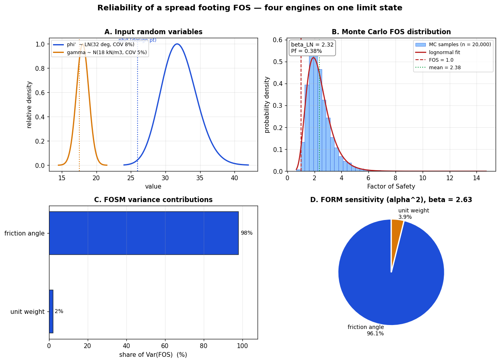<figcaption>Square footing B=2 m on sand; FOS = q_ult/q with phi&#x27; and gamma as random variables, run through all four engines.</figcaption></figure>
  <p class="what">The same footing is analyzed as a probability problem: friction angle and unit weight are given as distributions rather than single values, and the Vesic bearing capacity is evaluated thousands of times. Panel B is the resulting spread of factor of safety — the deterministic mean is about 2.4, but the tail that matters crosses FOS = 1, giving a probability of failure near 0.4%. Panels C and D answer the practical question &#x27;which unknown is driving the risk?&#x27;: both the FOSM variance split and the FORM design-point sensitivity put ~96-98% of the uncertainty on the friction angle, so that is where a confirming test buys the most. All four engines (FOSM, point-estimate, Monte Carlo, FORM) agree to within their expected tolerances, reproducing the published cross-check table.</p>
  <div class="numbers"><div class="row"><div class="k">FOSM E[FOS] / COV</div><div class="v">2.220 / 0.35</div></div>
<div class="row"><div class="k">PEM E[FOS] / COV</div><div class="v">2.366 / 0.33</div></div>
<div class="row"><div class="k">Monte Carlo Pf / beta</div><div class="v">0.38% / 2.32</div></div>
<div class="row"><div class="k">FORM beta / Pf</div><div class="v">2.627 / 0.43%</div></div>
<div class="row"><div class="k">FORM design point</div><div class="v">phi* = 26.0 deg, gamma* = 17.5</div></div>
<div class="row"><div class="k">Dominant variable (alpha^2)</div><div class="v">phi&#x27; = 96.1%</div></div></div>
</section>

<section class="ex" id="ex9">
  <div class="num">Exhibit 09</div>
  <h2>MSE wall LRFD external stability — every check, every load case</h2>
  <div class="module">module: retaining_walls</div>
  <div class="badge"><b>Validation basis:</b> GEC-11 (FHWA-NHI-10-025) Example E4 — sliding CDR 1.85/2.08/1.37; bearing 1.57</div>
  <figure>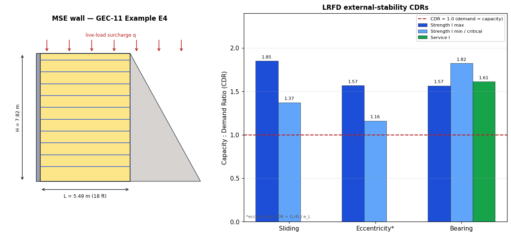<figcaption>A 25.6-ft MSE wall with 18-ft reinforcement, checked to AASHTO/GEC-11 Strength I (max and min load factors) and Service I.</figcaption></figure>
  <p class="what">External stability of a mechanically stabilized earth wall is not one number but a matrix: three failure modes (the block sliding, tipping past its eccentricity limit, and overstressing the foundation) each checked under several AASHTO load combinations. The left panel is the wall the numbers describe; the right panel is the whole matrix as capacity-to-demand ratios, where anything above the red 1.0 line passes. The &#x27;critical&#x27; combination deliberately pairs minimum vertical load with maximum thrust — that is why sliding drops to 1.37 there even though the nominal case is 1.85. These reproduce the FHWA GEC-11 Example E4 hand calculation to within rounding, including the bookkeeping rule that the live-load surcharge helps bearing but is excluded from sliding and eccentricity resistance.</p>
  <div class="numbers"><div class="row"><div class="k">Sliding CDR (max/min/critical)</div><div class="v">1.85 / 2.07 / 1.37</div></div>
<div class="row"><div class="k">Eccentricity e_L (max) vs L/4</div><div class="v">2.87 ft vs 4.50 ft</div></div>
<div class="row"><div class="k">Bearing sigma_v (Str I max)</div><div class="v">6.71 ksf</div></div>
<div class="row"><div class="k">Bearing CDR (governing)</div><div class="v">1.57</div></div>
<div class="row"><div class="k">Overall</div><div class="v">PASS</div></div></div>
</section>

<section class="ex" id="ex10">
  <div class="num">Exhibit 10</div>
  <h2>Bearing capacity and settlement — the two halves of a footing check</h2>
  <div class="module">module: bearing_capacity + settlement</div>
  <div class="badge"><b>Validation basis:</b> GEC-6 (FHWA-SA-02-054) Example B-1 — Vesic q_ult and Hough settlement table</div>
  <figure>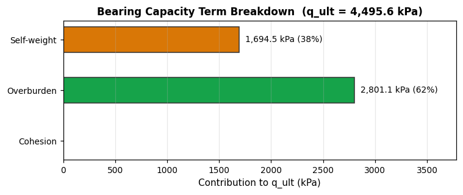<figcaption>Where the bearing capacity comes from: the Vesic surcharge and self-weight terms for a 6 m square footing on sand (c = 0).</figcaption></figure><figure>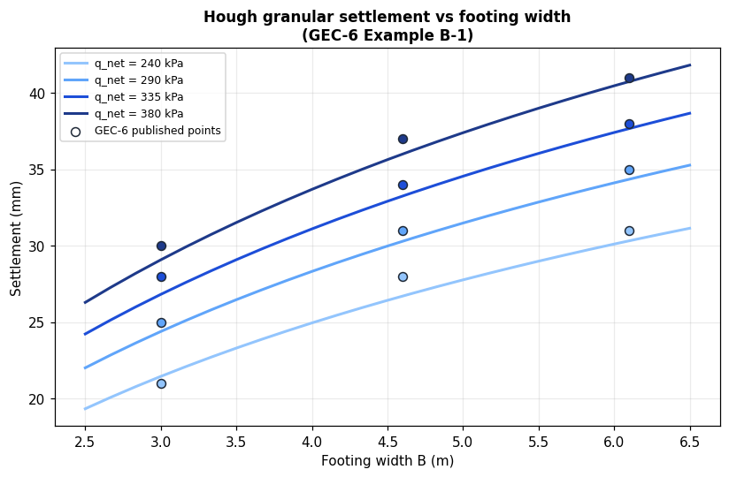<figcaption>The competing limit: Hough settlement grows with footing width even as bearing capacity does. Dots are the published GEC-6 table.</figcaption></figure>
  <p class="what">A footing has two independent ways to fail, and a real design has to satisfy both. The left figure decomposes the ultimate bearing capacity into its Vesic terms — for a cohesionless sand the surcharge (embedment) and self-weight terms carry everything, and the chart shows how much each contributes. The right figure is the settlement side of the same problem: as the footing is widened to gain bearing capacity, it also engages deeper soil and settles more, so bigger is not automatically safer. Both reproduce the FHWA GEC-6 worked example — the Hough curve passes through the published table points (dots) across footing widths and applied pressures.</p>
  <div class="numbers"><div class="row"><div class="k">q_ult (B=6 m, Vesic)</div><div class="v">4,496 kPa</div></div>
<div class="row"><div class="k">Overburden term</div><div class="v">2,801 kPa</div></div>
<div class="row"><div class="k">Self-weight term</div><div class="v">1,694 kPa</div></div>
<div class="row"><div class="k">Hough settlement (B=3 m, q=240)</div><div class="v">21 mm (published 21 mm)</div></div>
<div class="row"><div class="k">Hough settlement (B=6.1 m, q=240)</div><div class="v">30 mm (published 31 mm)</div></div></div>
</section>

<section class="ex" id="ex11">
  <div class="num">Exhibit 11</div>
  <h2>Pile driving — how hard to hammer to prove a capacity</h2>
  <div class="module">module: wave_equation</div>
  <div class="badge"><b>Validation basis:</b> Smith (1960) 1-D wave equation with GRLWEAP-style Smith damping; library Vulcan 010 hammer</div>
  <figure>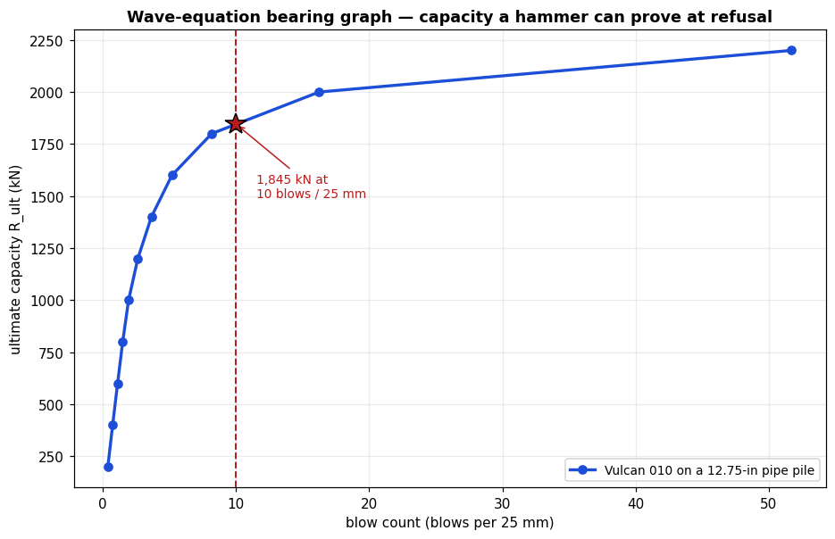<figcaption>The bearing graph: for a given hammer and pile, the ultimate capacity implied by each driving blow count. The star marks the capacity provable at a practical-refusal criterion.</figcaption></figure>
  <p class="what">You cannot see a pile&#x27;s capacity, but you can feel it in the hammer: the harder a pile is to advance, the more the soil is resisting it. The wave-equation model turns that intuition into a curve by simulating the stress wave a hammer blow sends down the pile and computing how far the pile permanently moves for a given soil resistance. Run it across a range of resistances and you get this bearing graph, which the field crew reads backwards: they count blows per unit of penetration during driving, find that blow count on the horizontal axis, and read off the capacity the pile has reached. The curve steepens toward refusal — beyond a point, many more blows buy little extra capacity and risk damaging the pile. This is the model behind driving criteria and dynamic pile-testing acceptance.</p>
  <div class="numbers"><div class="row"><div class="k">Hammer / pile</div><div class="v">Vulcan 010, 12.75-in pipe pile (15 m)</div></div>
<div class="row"><div class="k">Resistances analyzed</div><div class="v">200-2200 kN</div></div>
<div class="row"><div class="k">Blow-count range</div><div class="v">0.4-51.7 blows / 25 mm</div></div>
<div class="row"><div class="k">Capacity at 10 blows/25 mm</div><div class="v">1,845 kN</div></div></div>
</section>

<section class="ex" id="ex12">
  <div class="num">Exhibit 12</div>
  <h2>From a PDF drawing to machine-readable geometry</h2>
  <div class="module">module: pdf_import</div>
  <div class="badge"><b>Validation basis:</b> Bundled sample_section.pdf — PyMuPDF vector extraction + grid overlay + cross-check</div>
  <figure>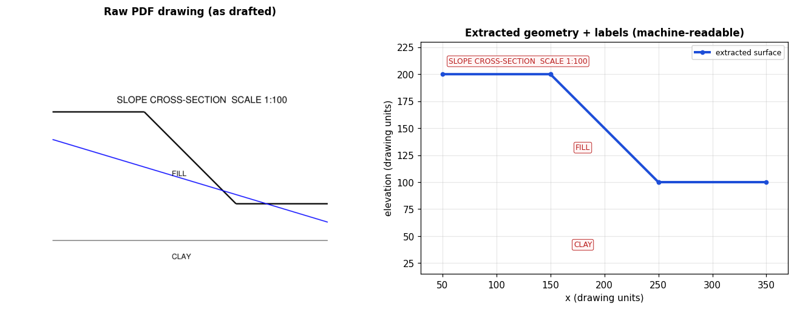<figcaption>Left: the cross-section as drawn in the PDF. Right: the geometry and labels the deterministic extractor pulled out, now in engineering coordinates ready to feed a slope or FEM model.</figcaption></figure><figure>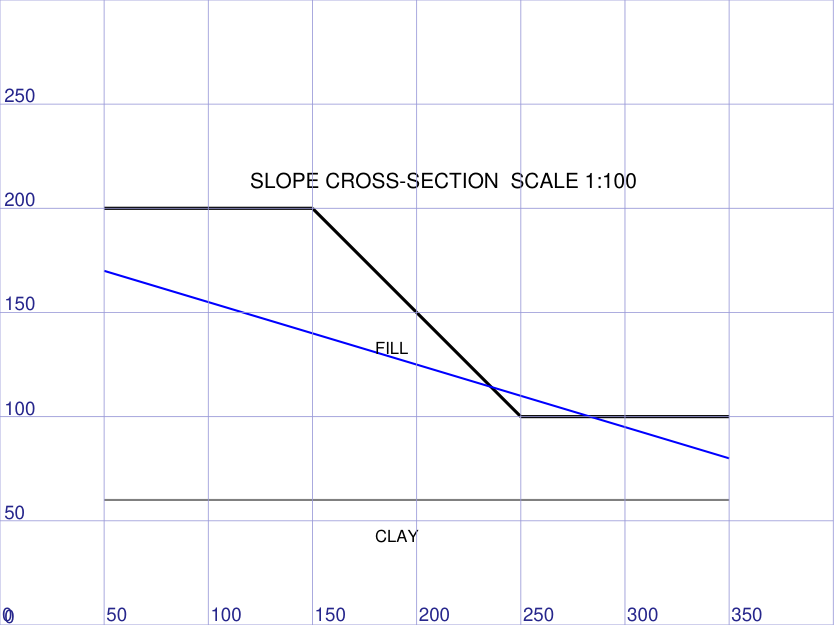<figcaption>The same page with a coordinate grid overlaid in the extraction frame — this is what a vision model reads values against, so a vision read-off lines up with the vector geometry.</figcaption></figure>
  <p class="what">A cross-section usually arrives as a PDF drawing — pixels and vector strokes, not a model. This module turns that drawing back into geometry an analysis can run. The left image is the raw PDF; the right panel is what the deterministic extractor pulled from its vector strokes and text: the ground-surface polyline in real coordinates plus the FILL/CLAY labels and the scale note, all machine-readable. The second image shows the page under a coordinate grid drawn in the same frame the geometry uses, which is how a vision model can read values off a scan and have them line up with the vector extraction. The last step is a cross-check: the exact vector geometry is compared against an independent reading of the same section, and the report confirms the surfaces agree to within a couple of drawing units — the deterministic extractor owns the geometry while the cross-check guards against a bad read.</p>
  <div class="numbers"><div class="row"><div class="k">Surface vertices extracted</div><div class="v">6</div></div>
<div class="row"><div class="k">Text labels recovered</div><div class="v">SLOPE CROSS-SECTION, FILL, CLAY</div></div>
<div class="row"><div class="k">Cross-check surface deviation</div><div class="v">max 1.66, mean 0.99 units (tolerance 3.0)</div></div>
<div class="row"><div class="k">Cross-check verdict</div><div class="v">surface agrees</div></div></div>
</section>
</main>
<footer>
  Generated by <code>docs/gallery/build_gallery.py</code> — 12 exhibits,
  built in 63 s. Every analysis is a live run of the shipped modules on
  the cited published benchmark; delete <code>docs/gallery/figures/</code> and re-run to
  regenerate. Not a substitute for engineering judgment.
</footer>
<script>
(function(){
  var b=document.getElementById('themebtn');
  b.addEventListener('click',function(){
    var r=document.documentElement;
    var cur=r.getAttribute('data-theme')
      || (window.matchMedia('(prefers-color-scheme:dark)').matches?'dark':'light');
    r.setAttribute('data-theme',cur==='dark'?'light':'dark');
  });
})();
</script>
